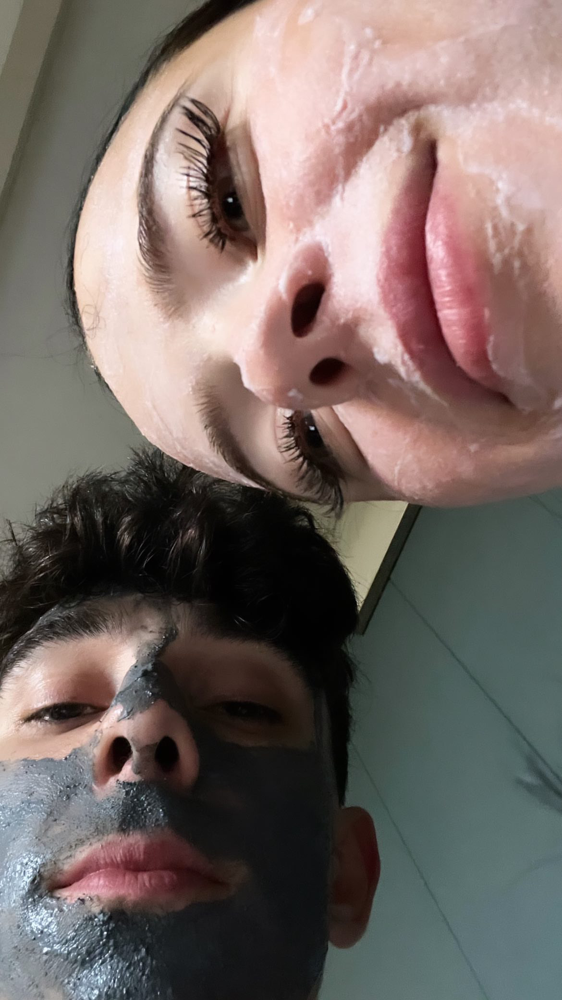

1 YEAR TOGETHER
Thank you for being in my life for 1 year. I can't reach you physically, so I created this for you. You really thought I wouldn’t put more efforts, but I always will. My girl deserves something for this date. We’ve been through so much for one year together, that I simply can never forget and I can’t write everything that I want to say, because it’s too much. Now exactly one month passed, since I haven’t seen you but I can’t stop thinking about you, even though we basically stopped all contact with each other. I miss you not just at late nights or when I'm alone, but also in public places, when I’m with friends or during daily activities. My reactive mechanism last month was to be numb, barely talk and try to not think about anything throughout the day, but every night I wake up thinking about you with pain in my heart, like I had a nightmare. I did think about all the things that happened with us and all the mistakes that we’ve done. You may see it as fake love, but I never truly loved anybody before. I wanted to have negative feelings towards you and not care, but sadly the more I am without you, the more I think and see only the good things in you. No matter how much you hurt me, you can’t push me away. I took my lessons and want to apologise for making you feel like I’m not manly enough or doing enough for you and hurting you. I always want to improve for you and I will never be the type of person to just tell you that this is how I am and you have to deal with it or leave. And I do want to show you that Im the most loving boyfriend for you, I do want to show you more love than the start, I cleansed my heart and have only love for you because I do care about you more than anything else in the world. And I promise you that I will become a good, loving and financially stable man that you will be proud of. I won’t go on the wrong path and I will continue striving to be the man that will take care of his parents, wife and children like nobody else will. I Just wished we build ourselves for each other, not other people. I know that at this point everyone is against us, and you say that I’m not your person and you don’t want me, but I’m sure that what I saw in your eyes and what my heart, mind and soul felt was not wrong. That’s why the thought of ever seeing you again is scary, I know that I should see a stranger in your eyes, but I will always see a soulmate. I’m sorry that I couldn’t be your perfect example, I’m sorry for the times I broke-down or didn’t give you the example of how a man should always react, but insulted you or went negative against you. I’m sorry for the times I made you feel unsafe or not like my wife. I’m sorry for all the negative things you saw or heard from me. But I can assure you I always loved and appreciated you. I know you said what I did was just the bare minimum, but I gave you all I could. All the weeks I had to get back home and eat the cheapest broodjes from Albert heijn with butter on top, knowing that I will have money to come to you in the weekend, bring you flowers, buy food so we can watch our movies together and cuddle under the blanket or just go eat something outside, was more than worth it for me. I remember the time when you peeked on my phone and saw that I had only 11 euros left for the next week and you insisted on sending me money and even after I was declining and saying no, you still somehow sent me money and told me that you won’t tell anybody about this. I will never ever forget that, because I’ve never had a person doing something like that for me in my life. Thank you and your family for introducing me to dutch culture, your hometown and treating me as a part of the family. Even though I couldn’t speak the same language as all of you or fully integrate, you were so nice to me. Ahh, so many good memories from your grandparents house, when the weather was hot, and we were in your dad’s old room, all the times it was raining and we smoked in front of your mom’s house and mostly all the memories in your dad’s house. I feel like I spent more time there than in my own house. I won’t ever forget your father, who cooked for us, provided us with a roof over our head always treated me in the warmest way, along with Wendella. He is truly a man that I will never forget in my life and will always be grateful to. Your mother and Vera, even though they don’t like me now, because of all the times she were nice, accepted me, spoke to me, gave us food and accepted me into their home, treating me like a family. Quint is so so special that I don’t even have the words to write it. He was more of a friend to me than most of my “friends” here and I really felt what is it to have a brother. My heart will always break when I think about him or remember about the pizzas he was making for us for free. I can’t imagine that at some point we will just grow away separate and life won’t meet us again. Your oma and opa, full of kindness, smiles and hugs that showed me a language is not needed for humans. You know, the biggest problem that I have here is that I feel very lonely, and with the lack of family I really looked at your family as mine, because that’s all I had. Every weekend I felt like I was going to see my own family. I also didn’t really grow up with alive grandparents, so I had the luck to feel what having grandparents is like, and on top of that an amazing loving ones. I know you are one very kind and sweet hearted girl, no matter how you talk or act to me now. I know how precious and vulnerable your eyes and heart are, because I saw the true you so many times. And you know you also saw the true person I am you know how much I miss the times where I was kissing your face and squishing you with cuddles. I really miss giving you flowers and seeing how it made you smile and feel like a woman. No other girl deserves that in my eyes, even if she does my loyalty for what you’ve done won’t allow it. I know I may became too obsessed with you and made you feel like I’m standing in the way of you and your friends, but I always just wanted to protect you against bad path and protect our future together. I was scared that other people may have an influence on you and therefore our relationship. I’m sorry for that and the fact I putted blame on others instead of focusing on me. And I’m sorry that I didn’t make you feel treated well enough at the end so you would still want me. Thank you for coming to my country and exploring Europe with me. Isn’t life beautiful? How did it connect two souls, one from the bottom right east, and one from the top left west. You saw all the distance that initially separated us. All these poor nights, gas stations, feeling of uncertainty and unknown is something only we will remember. The thrill and excitement of seeing the new places. All the countries we visited together and stops we’ve had are of the most magical memories I will ever have. You stole them forever and ever. I really cleanse my brain a lot and all of this has drastic changes on me as a person. I really wish that there could be a reset button, so we could start everything over and I can show you that I do appreciate you more than anything and will always do anything to keep you happy. Just to relive everything, but without making the same mistakes, just so I can keep my person. However I do understand that what I can do is limited, and respect the fact that you don’t want me anymore. We both fucked up, but I really thought there is a way to not lose you. I love you and will always love you from the depths of my heart my Bo.
I know this is not going to sound very manly, but there are so many other things I want to put here, but the words hurt too much to write. It took a lot of tears to write even this. I’m not going to bother you as promised, and please don’t text me just because you feel guilty or something like that. Especially from the moment you have even something with another guy. If this happened or happens, don’t text me while hiding it but just block me so I know and don’t have any hope. That’s the only thing I beg you for.P.SThere are 2 songs that I want to remind you of, you surely remember listening to them with me, however I found their translations so you can finally understand them (sadly the first one is sped up)
SONG 1 - https://www.youtube.com/watch?v=iWRQWtnH2pw&ab_channel=13ariii
SONG 2 - https://youtu.be/g10DHZUdhhA?si=yvw3bzTd_lA1WuLG
This website will be active from the 1st of December 2024 and will shut down on the 1st of December 2025.
